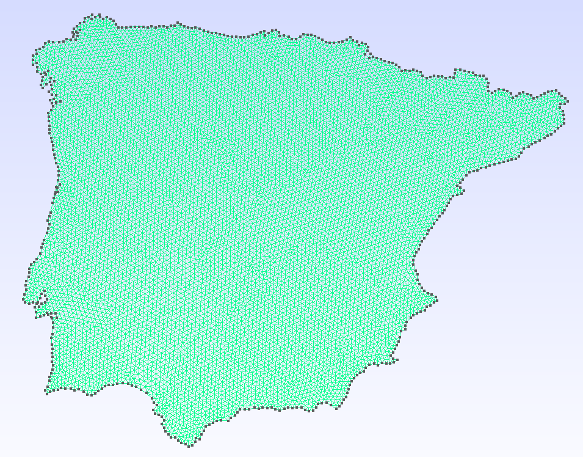
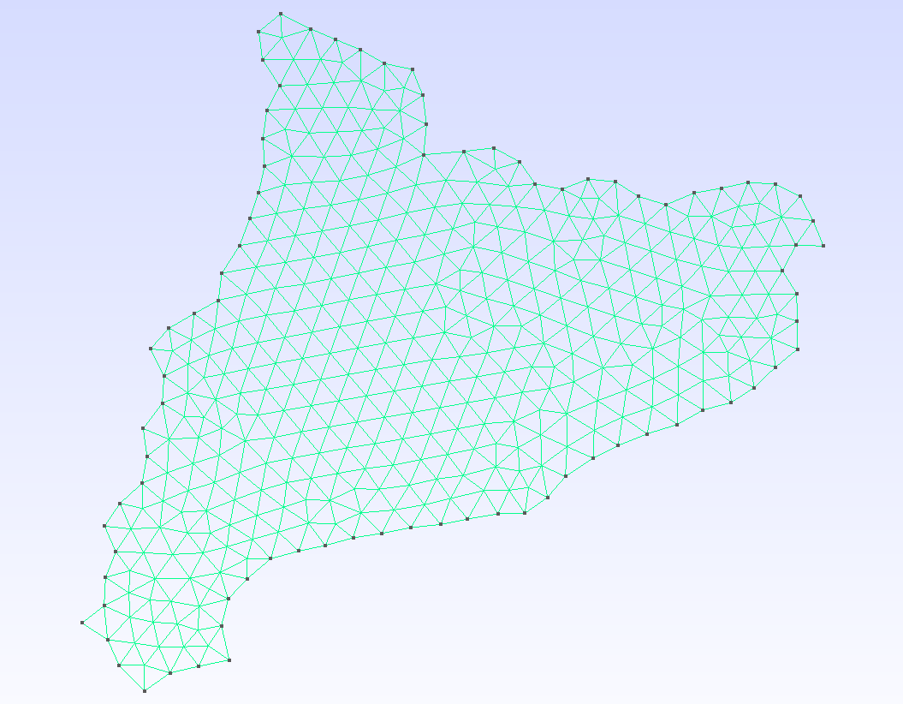
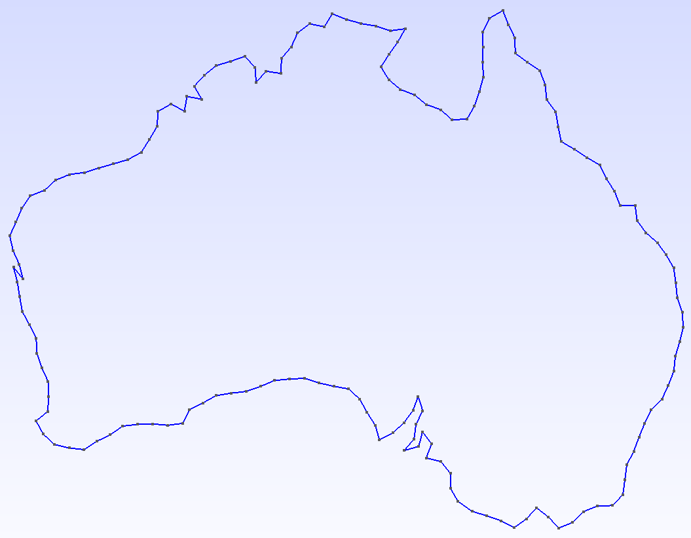
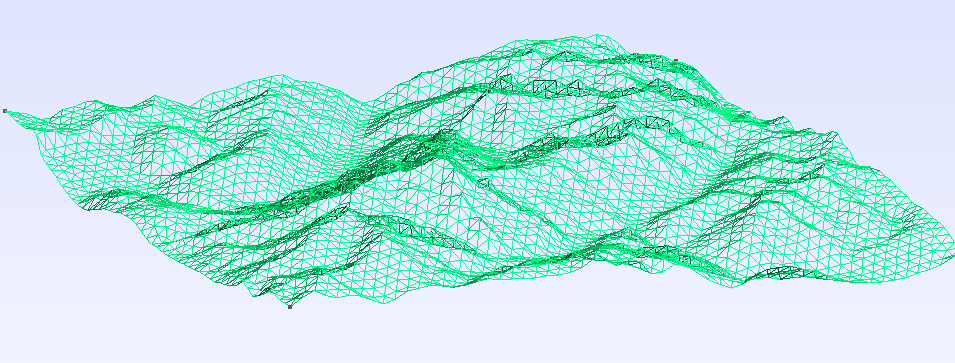
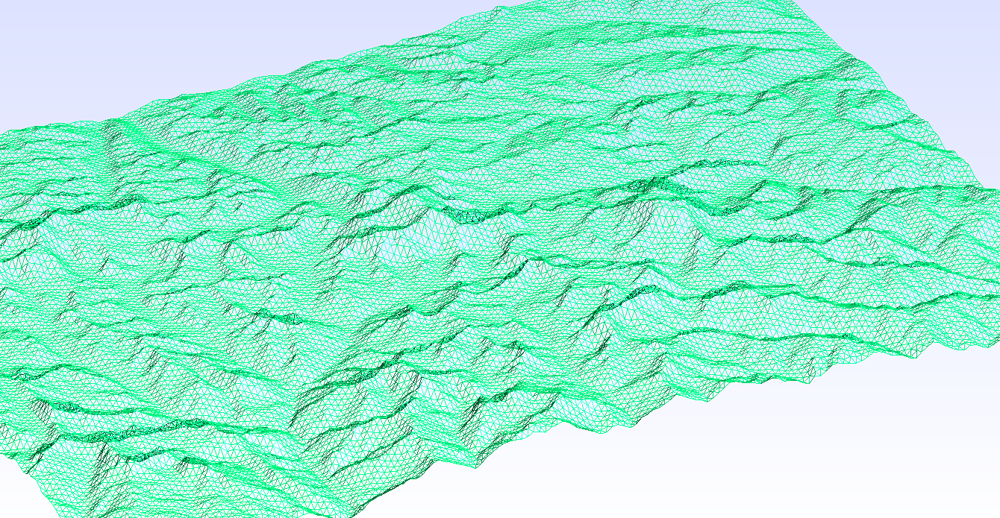

GeoGmsh.jl
GeoGmsh — Module
GeoGmshConvert geospatial data to Gmsh geometry (.geo) and mesh (.msh) files. Accepts any GeoInterface-compatible source: Shapefiles, GeoJSON, GeoPackage, GeoParquet, NaturalEarth data, or raw GeoInterface geometries.
Typical workflow
using GeoGmsh
# From Natural Earth (no files needed)
using NaturalEarth
geoms_to_geo(naturalearth("admin_0_countries", 110), "countries";
# target_crs defaults to :auto_utm — UTM zone detected from geometry centroid
simplify_alg = MinEdgeLength(tol = 5_000.0),
mesh_size = 2.0,
)
# From any file (Shapefile, GeoJSON, GeoPackage, …)
df = read_geodata("regions.shp")
geoms_to_geo(df, "output"; mesh_size = 2.0) # auto UTM by default
# 3D terrain mesh
geoms_to_msh_3d("region.shp", "srtm.tif", "terrain";
target_crs = "EPSG:32632",
mesh_size = 500.0,
)Pipeline (2D)
geoms_to_geo / geoms_to_msh run these steps:
GeometryOps.reproject— reproject coordinates (Proj.jl)GeometryOps.simplify(MinEdgeLength…)— remove short edgesGeometryOps.segmentize— split long edgesingest— convert to Gmsh-readyGeometry2Dfilter_components— drop degenerate ringsrescale— normalise into anL × Lbounding boxwrite_geoorgenerate_mesh— write output
Pipeline (3D surface)
geoms_to_geo_3d / geoms_to_msh_3d add after step 6:
read_dem— read DEM raster (GeoTIFF, SRTM, NetCDF, …)lift_to_3d— sample boundary point elevationswrite_geoorgenerate_meshwithGeometry3D
Pipeline (3D volume)
geoms_to_msh_3d_volume produces a tetrahedral solid mesh by extruding the terrain surface downward by depth (in CRS units):
read_dem— read DEM rasterlift_to_3d— sample boundary point elevationsgenerate_mesh_volume— flat 2D mesh → prism extrusion → 3 tets per prism
A Julia package that converts geospatial data into Gmsh geometry (.geo) and mesh (.msh) files. Built on the JuliaGeo ecosystem — GeoInterface, GeometryOps, Proj, ArchGDAL — and accepts any GeoInterface-compatible source: Shapefiles, GeoJSON, GeoPackage, GeoParquet, NaturalEarth data, or raw geometries.
Flat 2D meshes from any geospatial boundary:
 |  |  |  |
| Iberian Peninsula | Catalonia | Australia — geometry | Australia — mesh |
3D terrain manifolds by sampling a Digital Elevation Model at every mesh node:
 |  |
| Mont Blanc | Everest |
Features
- Universal reader — load any geospatial format (Shapefile, GeoJSON, GeoPackage, GeoParquet, …) through a single
read_geodatacall backed by GDAL. Read directly from ZIP archives via the/vsizip/virtual filesystem. - Reproject — convert between coordinate systems via GeometryOps.jl / Proj.jl (e.g. geographic degrees → UTM metres).
- Simplify — remove short edges (
MinEdgeLength), suppress zig-zag spikes (AngleFilter), or chain algorithms with∘(ComposedAlg). - Segmentize — subdivide long edges via
GeometryOps.segmentizeto control maximum element size. - Rescale — normalise geometry into a dimensionless bounding box so
mesh_sizestays consistent across datasets. - 3D terrain — lift a 2D mesh to terrain elevation by sampling a DEM raster (GeoTIFF, SRTM, NetCDF, …) at every node.
- Output — write a human-readable
.geoscript or call the Gmsh API to produce a.mshfile directly; linear/quadratic elements and quad recombination supported.
Installation
using Pkg
Pkg.add(url = "https://github.com/JordiManyer/GeoGmsh.jl")Quick start
From NaturalEarth (no files needed)
using GeoGmsh, NaturalEarth
countries = naturalearth("admin_0_countries", 110)
geoms_to_msh(countries, "france";
select = row -> get(row, :NAME, "") == "France" && row.ring == 1,
target_crs = "EPSG:3857",
simplify_alg = MinEdgeLength(tol = 5_000.0),
bbox_size = 100.0,
mesh_size = 2.0,
)
# → france.mshFrom a file (Shapefile, GeoJSON, …)
using GeoGmsh
# Inspect available features and rings
list_components("NUTS_RG_01M_2024_4326_LEVL_0.geojson")
# Mesh mainland Germany
geoms_to_msh("NUTS_RG_01M_2024_4326_LEVL_0.geojson", "germany";
select = row -> row.NUTS_ID == "DE" && row.ring == 1,
target_crs = "EPSG:3857",
simplify_alg = MinEdgeLength(tol = 10_000.0),
bbox_size = 100.0,
mesh_size = 2.0,
)
# → germany.msh3D terrain mesh
using GeoGmsh
geoms_to_msh_3d("region.geojson", "dem_utm.tif", "terrain";
select = row -> row.NAME == "MyRegion" && row.ring == 1,
target_crs = "EPSG:32632", # must match the DEM CRS
simplify_alg = MinEdgeLength(tol = 500.0),
mesh_size = 500.0,
)
# → terrain.msh (z-coordinates sampled from DEM)Pipeline overview
| Step | Function | Purpose |
|---|---|---|
| Read | read_geodata | Parse any geospatial format; filter by attribute |
| Reproject | GeometryOps.reproject | Convert coordinates via PROJ |
| Simplify | MinEdgeLength, AngleFilter, ComposedAlg | Remove redundant vertices |
| Segmentize | GeometryOps.segmentize | Subdivide long edges |
| Ingest | ingest | Normalise ring orientation for Gmsh |
| Filter | filter_components | Drop degenerate rings |
| Rescale | rescale | Normalise into an L × L bounding box |
| DEM | read_dem, lift_to_3d | Sample elevations (3D only) |
| Output | write_geo / generate_mesh | Write .geo or .msh |
| Volume | generate_mesh_volume | Extrude surface → tetrahedral solid (3D only) |
See the Pipeline guide and API reference for details, or browse the Examples section in the sidebar for full worked examples.
Data sources
- Natural Earth (France, China): https://www.naturalearthdata.com — free vector map data, public domain.
- NUTS (Spain, Catalonia, Iberia): Eurostat / GISCO, © European Union. https://ec.europa.eu/eurostat/web/gisco/geodata/statistical-units/territorial-units-statistics
- ASGS Edition 3 (Australia): Australian Bureau of Statistics. https://www.abs.gov.au/statistics/standards/australian-statistical-geography-standard-asgs-edition-3
- Copernicus GLO-30 DEM (Mont Blanc, Everest): © DLR e.V. 2010–2014 and © Airbus Defence and Space GmbH 2014–2018. https://spacedata.copernicus.eu/collections/copernicus-digital-elevation-model